A social study app for college students that makes the focus timer something other people can see: friends on a campus map, sessions anyone can join, and streaks the right people notice.
Students go to the library at night because working near other people makes it easier to start. Study apps give them a timer, a streak counter and a leaderboard of strangers.
I asked classmates where they study, who with, and what makes them show up.
They pick a library or café for the people in it, not the desk.
Everyone had abandoned a streak. Nobody remembered anyone noticing.
Planning a session over text kills it. Walking into one already running does not.
Asking how to help someone focus longer only produced solo features. The better question was what changes when friends can see the timer.
Before
"Focus for 25 minutes."
A countdown with nothing behind it
After
"7 friends studying now."
A session other people can see and join
A social layer can turn competitive, noisy or too revealing. Three rules kept it from that.
Friends are visible on the map, but nothing nudges you to begin.
Streaks and challenges interrupt only when something real happened.
Chosen before the timer starts, never a default to undo later.
Laying the whole product out as one flow exposed the biggest gap: what a session looks like to everyone not in it.

Helvetica Neue, soft blues and glass surfaces keep it familiar, and quiet enough to leave open beside your notes for hours.

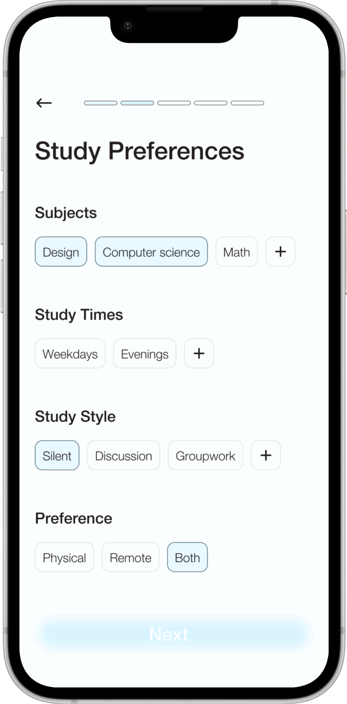
Setup asks what you study, when, and in what kind of room. The answers shape session suggestions later.
Name it, pick public or private, set a length, and go. Once it runs, the screen gets out of the way.
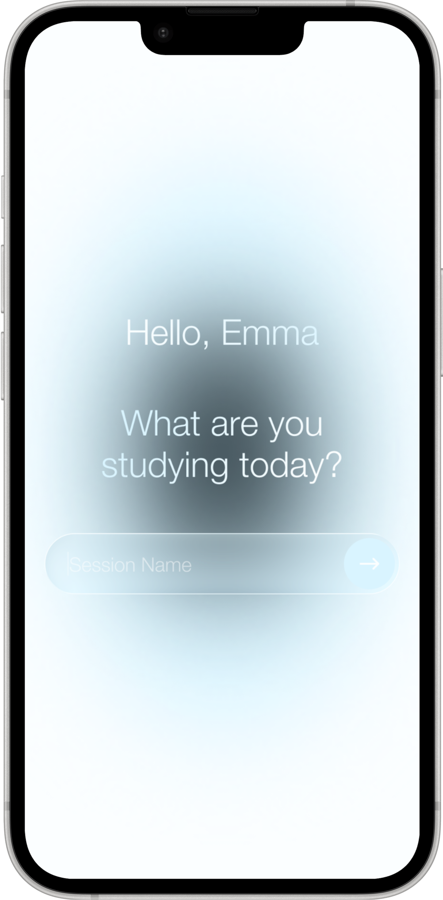
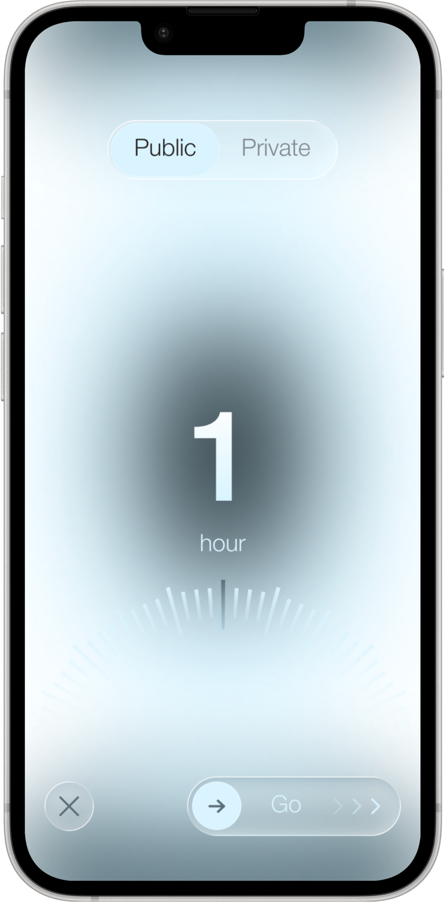
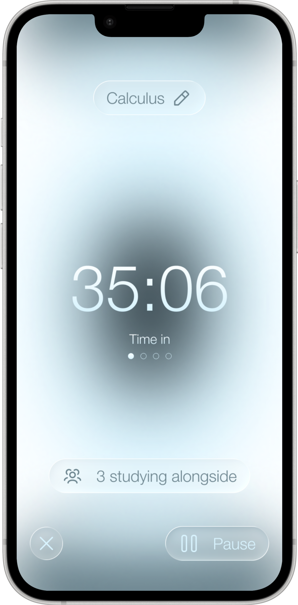
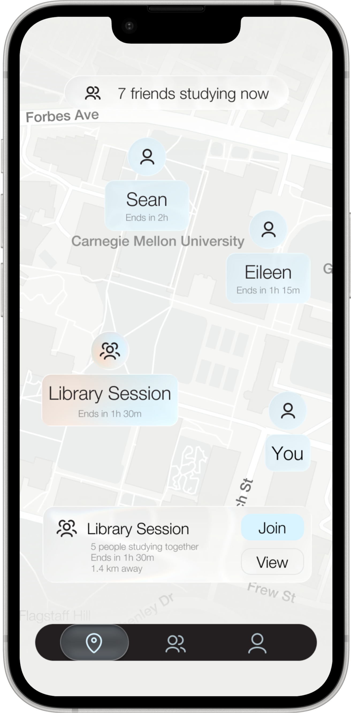
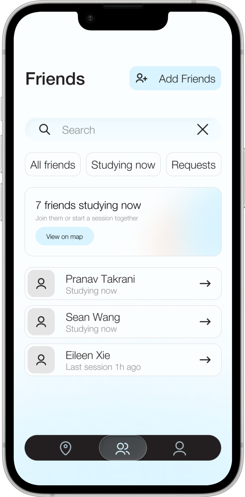
Friends appear as pins with the time left on their timer. A group session is one tap to join.
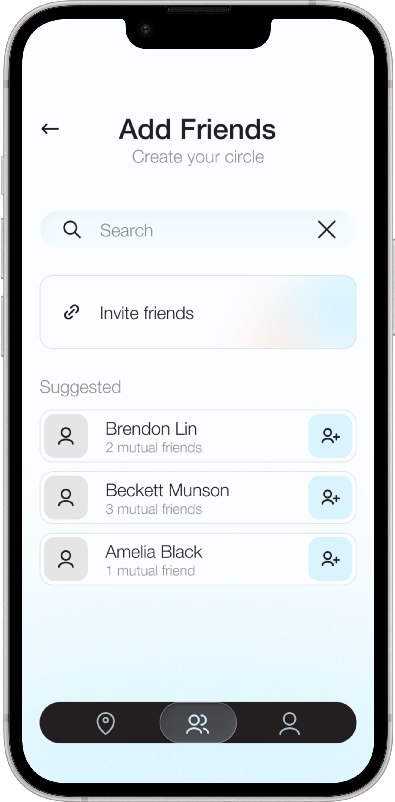
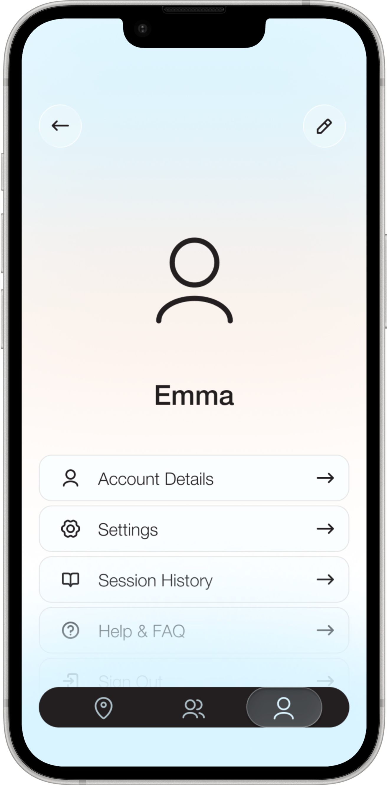
Search, invite directly, or accept a suggestion from mutual friends. No feed and no follower count.
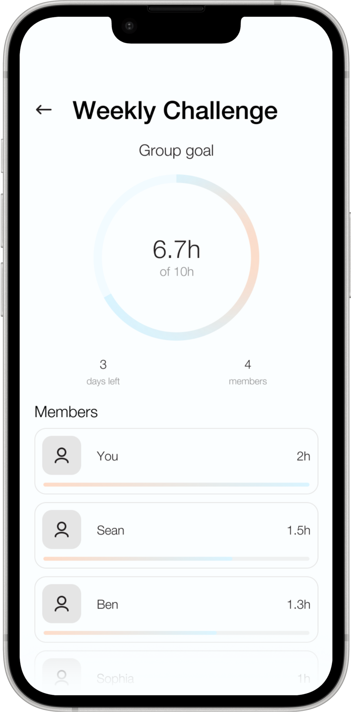
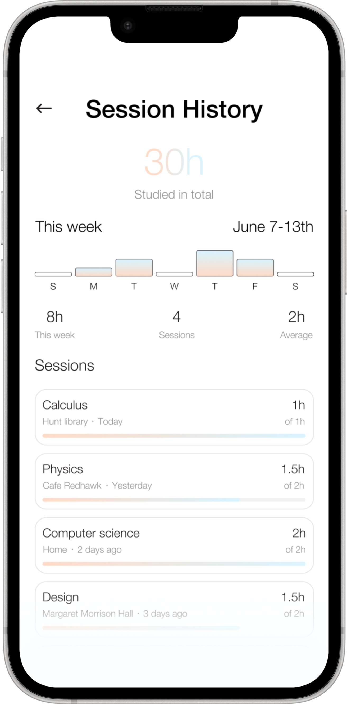
Weekly challenges give a group a shared goal. History is a plain record of the time put in.
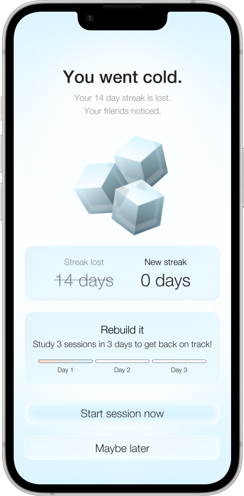
The screen states what happened and holds the number. It neither scolds nor hides the loss.
Presence did more than any feature I built around it. Seeing others study motivated more reliably than counters or notifications.
Most of the hard decisions were about restraint: what to leave off the timer, how often to celebrate, and how to handle a broken streak.
Next I would design the map's quieter states: hotspots through the day, quiet hours, friends about to finish.